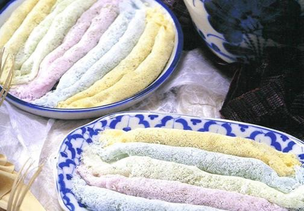

ส่วนผสม
1.แป้งข้าวเหนียว 3 ถ้วยตวง
2.มะพร้าวทึนทึกขูดเส้น 2 ถ้วยตวง
3.น้ำตาลโตนด 1 ถ้วยตวง
4.แป้งท้าวยายม่อมละลายน้ำ 1 ช้อนชา
5.เกลือป่น 1/2 ช้อนชา
6.สีต่างๆ ใช้น้ำดอกอัญชัญ น้ำดอกคำฝอย น้ำใบเตย
7.น้ำลอยดอกไม้ (ใช้น้ำลอยดอกอะไรก็ได้หรือจะไม่ใส่ก็ได้ สูตรนี้ผมใช้น้ำเกสรดอกบัว)
วิธีทำ
1.ตั้งกะทะทำไส้ ใส่น้ำตาลโตนดกับน้ำลอยดอกไม้ คนจนน้ำตาลละลาย นำมะพร้าว น้ำใบเตย เกลือ ใส่ลงไปจนเข้ากันดี ใส่แป้งท้าวยายม่อมเพื่อให้ไส้นุ่มเหนียว ไม่แข็งกระด้าง และ มีความเงาใส คนไส้จนเหนียวขึ้นสักพักแล้วทิ้งไว้ให้เย็น จากนั้นนำมาปั้นเป็นกลมทรงยาวรีๆแล้วพักไว้ วิธีปั้นไส้ไม่ให้ติดมือ ใช้ถุงพลาสติกรองจะห่อไส้ได้ง่ายยิ่งขึ้น เสร็จเรียบร้อยแล้วนำไปอบควันเทียนสัก2รอบ
2.นำแป้งข้าวเหนียวอบควันเทียน1คืน เติมเกลือลงไปนิดหน่อย ผสมสีต่างๆ สูตรนี้ใช้3สี สีฟ้าจากน้ำอัญชัญ สีเหลืองจากน้ำดอกคำฝอย สีเขียวจากน้ำใบเตย ค่อยๆผสมให้แป้งพอชื้น สังเกตุดูว่าใช้ได้หรือยัง ให้ลองเกลี่ยๆแป้งดู แป้งจะจับตัวเป็นเม็ดถั่วเล็กๆก็ใช้ได้
3.ตั้งกะทะใช้ไฟกลางค่อนข้างอ่อน หากยังไม่ทราบว่าควรใช้ระดับไฟแค่ไหน ลองทำครั้งแรกแล้วปรับเอาให้ได้ความแรงไฟที่พอเหมาะ ยีแป้งลงไปในกระชอนตาถี่วนๆให้เป็นวงกลมตามภาพ พอแป้งสุกขอบแป้งด้านข้างจะยกตัวขึ้นมา วางไส้ที่ปั้นไว้ตรงขอบแป้งแล้วม้วน
4.ทิ้งไว้ให้เย็นขนมก็จะแข็งตัวขึ้น ก็รับประทานได้ ถ้าต้องการให้หอมควันเทียนเพิ่มขึ้น ให้นำขนมอบควันเทียนอีกประมาณ1-2รอบ